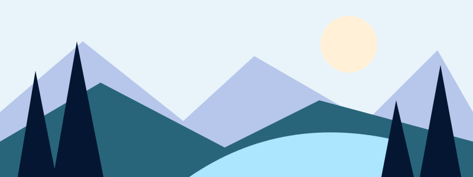

Assets SVG
Logo officiel

Icônes
home file folder people lock phone monitor camera mic video search settings key check plus clock qr shield bell upload


Illustration vectorielle

SVG original simplifié et éditable, interprétation de la direction visuelle ; ce n’est pas une vectorisation des PNG générés.